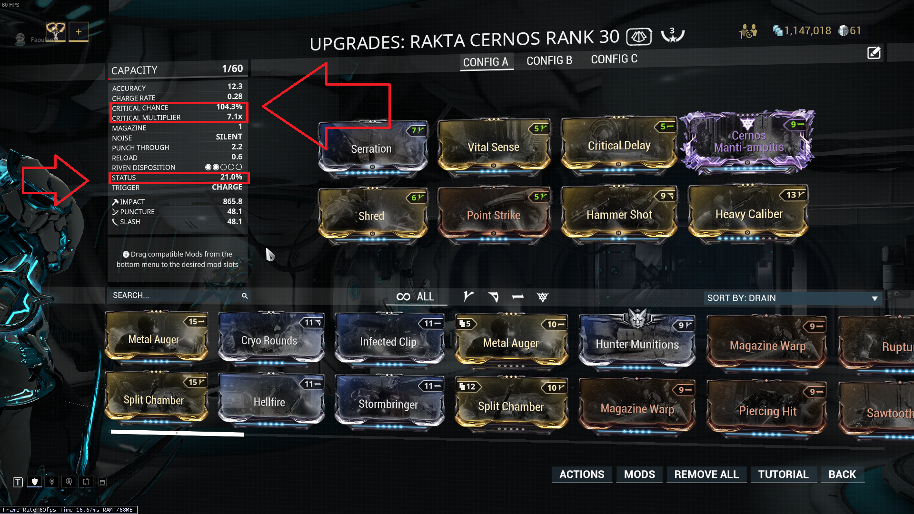

The first things you put on weapons are called "essentials." These are mods that are strong enough that there is no reason NOT to put them on. They are as follows, for each weapon slot:
Step one is to look at your weapon, and decide what kind of weapon it is. There are two things you want to consider. The first is the critical chance and status chance are. If the crit chance is higher, the weapon would be classified as a crit weapon, and same for status. The second thing to consider is what kind of damage the weapon deals. The best type of damage is slash, followed by any kind of base elemental damage, followed by any other kind of damage.
after you've decided what kind of weapon you have, it's time to start modding. If your gun has impact, slash, or puncture, then put on any relevant critical or status weapons. Status mods are called "dual stat" mods, and are things like pistol pestilence, high voltage, and thermite rounds. They are sometimes fairly hard to get, and always add one of the four base elemental types. The goal with this is to get your weapon's status chance to 100%. If it can't reach at least 70, then consider trying another weapon. With crit weapons, put on hammer shot, vital sense, and point strike, and add on critical delay if you think your boom stick needs a bit more. Equivlents for secondaries.
Now that you have a baseline decent gun, you'll add some more damage. Pop on some elemental damage mods, like Cryo Rounds, Stormbringer, and Heated Charge. This will bring your damage up further, but will also make it more affected by enemies various resistances and weaknesses.